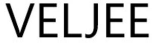

Trade Mark Journal No.2025/031 1 August 2025
WO0000001864383 (2,3,4,6,7,8,9,11,12,14,20,22,23,24,26,27,30,34)
Office of origin: France
Date of International Registration:21 January 2025
Date of designation in the UK:
21 January 2025

International priority date claimed: 26 July 2024
(France)
(5072912)
- Class 2
- Ceramic paints; enamels [varnishes]; enamels for painting; engraving inks; fixatives [varnishes]; fixatives for watercolors; food colorants; gamboge for painting; glazes [paints, lacquers]; glitter for paints; gum resins; gum-lac; indigo [colorant]; filled ink cartridges for printers and photocopiers; inks for leather; inks for printers and photocopiers; mastic [natural resin]; metal foils for painting, decoration, printing and works of art; metals in powder form for painting; oil paints for artists; paints for artwork; paper for dyeing Easter eggs; pigments; dyes for footwear; filled toner cartridges for printers and photocopiers; toner for printers and photocopiers; watercolors for artists; none of these products being intended for vehicles.
- Class 3
- Almond milk for cosmetic use; almond oil for cosmetic use; almond soap; aloe vera preparations for cosmetic use; antiperspirant soaps; antiperspirants (toiletries); badian essence; bath preparations, not for medical use; bath salts not for medical use; bath tea for cosmetic use; beard dyes; beauty masks; bergamot oil; body glitter; body paint for cosmetic use; breath freshening preparations for personal hygiene; breath freshening sprays; breath freshening strips; cakes of toilet soap; non-medicated cleansers for intimate hygiene; cleansing milk for toilet purposes; deodorant soaps; deodorants for human beings or animals; deodorants for pets; dressings for nail repair; dry shampoos; essential-oil-based creams for aromatherapy; essential oils for aromatherapy; essential oils of cedarwood; essential oils of citron; essential oils of lemon; ethereal essences; gaultheria oil; hair conditioners; plant extracts for cosmetic use; jasmine oil; lavender oil; lavender water; mint essence [essential oil]; oils for cosmetic use; rose oil; soaps for foot perspiration; soaps; antistatic dryer sheets; antistatic products for household use; canned pressurized air for cleaning and dusting purposes; cleaning chemical products for household use; detergent tablets for coffee machines; cleaning chalk; cleaning products; cloths impregnated with a detergent for cleaning; color-run prevention laundry sheets; flavorings for beverages [essential oils]; food flavorings [essential oils]; cake flavorings [essential oils]; aromatics [essential oils].
- Class 4
- Candles [lighting]; tapers; church candles; carnauba wax; ceresine; Christmas tree candles; nightlights [candles]; paraffin; perfumed candles; soy candles; wax [raw material]; wicks for candles; dust-removing products.
- Class 6
- Metallic bag hooks; bells; bells; small bells; bells; bolts of metal; flat bolts; boxes of metal for dispensing paper towels; buckles of common metal [hardware]; clothes hooks of metal; containers of metal [storage, transport]; crampons for climbing; crampons of metal; metal dispensers for dog waste bags; non-electric metal door bells; door bolts of metal; hooks [metal hardware]; house numbers of metal, non-luminous; knobs [handles] of metal; letter boxes of metal; letters and numerals of common metal, except type; metal locks for vehicles excluding bicycles; locks of metal, other than electric; metal padlocks other than electronic excluding padlocks for bicycles; screws of metal; spring locks; step stools of metal; stepladders of metal; caps of metal; swimming pools of metal [structures]; metal tacks [nails]; metal brads [nails]; tanks of metal; empty tool boxes of metal; empty tool chests of metal; towel dispensers of metal; hardware of metal.
- Class 7
- 3D bioprinters; 3D printers; 3D printing pens; aerating pumps for aquariums; apparatus for aerating beverages; apparatus for aerating water; apparatus for drawing up beer under pressure; electric beaters; beer pumps; electromechanical apparatus for beverage preparation; bottle filling machines; bottle washing machines; braiding machines; bread cutting machines; brewing machines; brushes for vacuum cleaners; butter machines; central vacuum cleaning installations; centrifugal machines; cleaning appliances utilizing steam; coffee grinders, other than hand operated; electric crushers for kitchen use; electric hammers; electric hand drills; electric welding apparatus; grating machines for vegetables; hemming machines; high-pressure washers; ironing machines; electric juice extractors; electric kitchen grinders; electric kitchen machines; kneading machines; knitting machines; electric knives; labelers; electric machines and apparatus for carpet shampooing; electric machines and apparatus for cleaning; electric machines and apparatus for polishing; sewing machines; shearing machines for animals; steam engines; steam brushes; suction nozzles for vacuum cleaners; electric can openers; vacuum cleaner attachments for disseminating perfumes and disinfectants; vacuum cleaner bags; vacuum cleaner hoses; vacuum cleaners; electric vegetable peelers; electric vegetable slicers; electric vegetable slicers, electric spiral vegetable cutters, electric hand drills; electric screwdrivers; electric screw guns; electric sanders; electric saws; lawnmowers, electric; electric lawn trimmers; electric hedge cutters.
- Class 8
- Hand-operated apparatus for destroying plant parasites; beard clippers; blade sharpening instruments; blades [hand tools]; knives with retractable blades [cutter]; table forks; spoons; carving knives; ceramic knives; non-electric cheese slicers; choppers being knives; chisels; flat irons; curling tongs; cutlery; cutters; cutting tools; daggers; daggers; depilation apparatus; glass hammers; eyelash curlers; files; manual food processors; fruit corers; fruit segmenters; hand-operated garden tools; electric apparatus for hair braiding; hair clippers for animals [hand instruments]; hair dippers for personal use, electric and non-electric; hair straighteners; hair-removing tweezers; hand-operated hand tools; hand-operated fruit cutters; hobby knives [scalpels]; ice picks; insecticide sprayers [hand tools]; insecticide sprayers [hand tools]; kitchen mandolines; knife handles; knives; laser depilation apparatus other than for medical use; lifting jacks, hand-operated; hand-operated jacks; manicure sets; electric manicure sets; meat choppers.
- Class 9
- Scientific research instruments and apparatus for laboratories; resuscitation mannequins; simulators for the steering or control of vehicles; apparatus and instruments used in controlling and monitoring air, water and unmanned vehicles; navigational instruments; transmitting sets [telecommunication]; graduated compasses; GPS apparatus; automatic steering devices for vehicles; life saving and safety apparatus and instruments; safety nets; luminous signs; traffic-light apparatus [signaling devices]; fire engines; acoustic [sound] alarms; security tokens being encryption devices; clothing for protection against accidents, irradiation and fire; bullet-proof clothing; protective helmets; head guards for sports; mouth guards for sports; protective suits for aviators; knee-pads for workers; magnifying glasses; mirrors for inspecting work; peepholes [magnifying lenses] for doors; magnets; smart watches; wearable activity trackers; joysticks for use with a computer, other than for video games; virtual reality headsets; smart glasses; spectacle cases; cases for smartphones; cases especially made for photographic apparatus and instruments; photographic apparatus and instruments; automated teller machines [ATMs]; invoicing machines; instruments and machines for testing materials; batteries and chargers for electronic cigarettes; electric and electronic effect devices for musical instruments; laboratory robots; educational robots; surveillance robots for security; humanoid robots with artificial intelligence; telescopes; binoculars; telescopes; optical amplifiers; telephone holders for cars; portable battery chargers for electric cars; vehicle breakdown warning triangles; reflective safety vests.
- Class 11
- Air-conditioning apparatus and installations; kitchen ovens; dental ovens; microwave ovens; bakers' ovens; stoves being heating apparatus; thermal-conversion solar collectors; chimney flues; chimney blowers; hearths; domestic fireplaces; sterilizers; incinerators; lighting apparatus and installations; luminous tubes for lighting; searchlights; luminous house numbers; reflectors for vehicles excluding bicycles; lights for vehicles excluding bicycles; lamps for lighting; electric lamps; gas lamps; laboratory lamps; oil lamps; street lamps; safety lamps; tanning beds; bath installations; bath fittings; toilets; urinals; fountains; chocolate fountains; electrically heated cushions and blankets, not for medical use; hot water bottles; electrically heated clothing; electric appliances for making yogurt; bread-making machines; electric coffee machines; ice-cream making machines; ice-cube machines and apparatus.
- Class 12
- Strollers; hoods, tarpaulins, baskets, mosquito nets and covers adapted for strollers; seat covers for cars; child safety seats for automobiles; sun visors for vehicles; steering wheel covers for cars; storage compartments for car trunks; roof boxes for cars; ashtrays for automobiles; cigar lighters for automobiles; cup holders for vehicles; headrests for vehicle seats; headlight wipers; luggage nets for vehicles; side view mirrors for vehicles.
- Class 14
- Jewels (jewelry); fashion jewelry; jewelry boxes and cases; watches; watch bands; watch cases and boxes; clocks; key rings [trinkets or fobs]; cuff links; tie pins; tie clips; charms for key rings; charms as jewelry articles; component parts of fine jewelry, jewelry and timepieces; clasps and beads for jewelry; movements for timepieces; clock hands; watch springs; watch glasses.
- Class 20
- Non-metal padlocks, other than electronic; pillows; cushions; gun racks; mattresses; bedsprings; mirrors; furniture and toilet mirrors; number plates, not of metal; small items of non-metal hardware, namely bolts, screws, dowels, furniture casters, collars for fastening pipes; letterboxes, not of metal or masonry; towel dispensers, not of metal; ticket dispensers for managing waiting lines; dog waste bag dispensers; toilet paper dispensers; baskets not of metal; baskets, not of metal; beds for household pets; boxes of wood or plastic materials; plastic clips for sealing bags; Clothes hooks, not of metal; clothes hangers; covers for clothing [wardrobe]; drawer dividers; non-electric fans for personal use; garment covers; hand-held mirrors [toilet mirrors]; kennels for household pets; boards for hanging keys; mats for infant playpens; removable mats for sinks; mobiles [decoration]; reusable baby changing mats; non-metallic empty tool boxes.
- Class 22
- Tarpaulins; awnings for vehicles; tents; shading canopies; laundry bags, mesh bags for washing laundry; cloth bags for packing; large-capacity bags for the transport and storage of materials in bulk; ropes and string made of natural or artificial textile fibers, paper or plastic; commercial fishing nets; hammocks; rope ladders; vehicle covers, not fitted; nets for laundry; body bags; mail bags; packaging bags of textile materials; animal fibers and raw textile fibers; animal hair; cocoons.
- Class 23
- Threads for textile use; elastic threads for textile use; rubber thread for textile use; glass threads for textile use; spun wool; knitting wool; spun silk; glass, elastic, rubber and plastic threads, for textile use; embroidery, darning or sewing threads, including those made of metal; spun cotton threads.
- Class 24
- Textile make-up removal wipes other than those impregnated with cosmetics; household linen; bath linen; bed linen; bed blankets; kitchen linen; table linen; sleeping bags; sleeping bag liners; mosquito nets; yoga blankets; yoga towels.
- Class 26
- Lace; embroidery; ribbons [haberdashery]; buttons; hooks (haberdashery); pins; needles; haberdashery, except yarns; lace trimmings; fasteners for clothing; fastenings for clothing; wigs; decorative articles for the hair; artificial plants; artificial flowers; artificial garlands; toupees [false hair]; false beards; barrettes; hair bands; haberdashery ribbons and bows for haberdashery or for the hair, whatever the material thereof; ribbons and bows for gift wrapping, not made of paper; hair nets; buckles [clothing accessories]; zip fasteners; charms other than for jewelry and key rings; artificial Christmas garlands and wreaths, including those with integrated lighting; electric and non-electric hair curlers; hair curling pins; hair-curling papers (curlers).
- Class 27
- Carpets; doormats; mats; coverings for floors; linoleum floor coverings; wall hangings not of textile; wallpapers; gymnastic mats; non-preshaped mats for vehicles; artificial turf; bath mats; yoga mats; pre-shaped mats for cars.
- Class 30
- Coffee; tea; coffee-based beverages, excluding beverages containing tapioca pearls; spices; honey; cardamom [spice]; chocolate; cinnamon [spice]; cloves [spice]; cocoa; condiments; confectionery; sugar confectionery; confectionery for decorating Christmas trees; curry [spice]; curry [spice]; non-medicinal infusions; orange blossom water for culinary use; cereals prepared for human consumption, namely, oat flakes, corn chips, husked barley, bulgur, muesli; pizzas; pies; sandwiches; chocolate-coated nuts; food or beverage flavorings, other than essential oils.
- Class 34
- Smokers' articles; matches; cigarette paper; pipes; lighters for smokers; cigar boxes; cigar cases; cigarette boxes; cigarette cases; ashtrays for smokers; electronic cigarettes; liquid solutions for electronic cigarettes; tobacco substitutes not for medical use; flavorings, other than essential oils, for use in electronic cigarettes; oral vaporizers for smokers; herbs for smoking; snuff; tobacco jars; snuff boxes; humidors.
HVEB
Representative: Madame Yam Claire Cabinet Yamark, 33 rue de la République,, Allée B, F-69002 Lyon, FRANCE